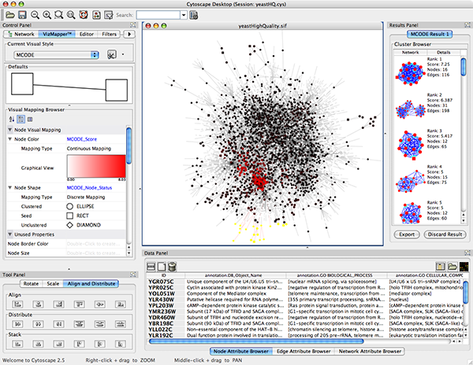
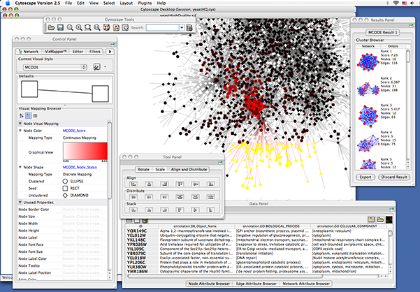
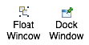

CytoPanels are floatable/dockable panels designed to cut down on the number of pop-up windows within Cytoscape and to create a more unified user experience. These panels used to be called CytoPanel 1, 2, and 3. From 2.5, they are named based on their functions. The following screenshot shows the file yeastHighQuality.sif and GO annotations loaded into Cytoscape, performed Force-Directed layout, enable Align and Distribute tools, and then run MCODE plugin for the data sets. In Control Panel (at the left-hand side of the screen), the Network Manager, Network Overview, VizMapper, Filters, and Cytoscape Editor have been loaded. On the bottom of the panel, there is another CytoPanel called Tool Panel. In the Data Panel, the Attribute Browser has been loaded. In addition, Result of the analysis by MCODE plugin is shown in Result Panel (at the right-hand side).

The user can then choose to resize, hide or float CytoPanels. For example, in the screenshot below, the user has chosen to float all panels and toolbar:

Cytoscape includes four CytoPanels: Control Panel on the left, Tool Panel on the bottom of Control Panel, Data Panel on the bottom, and Result Panel on the right. By default, Control Panel and Data Panel will appear. Result Panel may appear, depending on the mix of Cytoscape plugins that you currently have installed. Tool Panel will appear when you select the following commands under the Layout menu: Rotate, Scale, and Align and Distribute.
All panels can be shown or hidden using the View → Show/Hide functions.

In addition, CytoPanels can be floated or docked by selecting the icon at the top right corner of each CytoPanel. The icon and tooltip will change based on the CytoPanel state. If the CytoPanel is docked, clicking on the icon will float the CytoPanel, as indicated by the “Float Window” tooltip. Alternatively, if the CytoPanel is floating, clicking on the icon will dock the CytoPanel, as indicated by the “Dock Window” tooltip.
